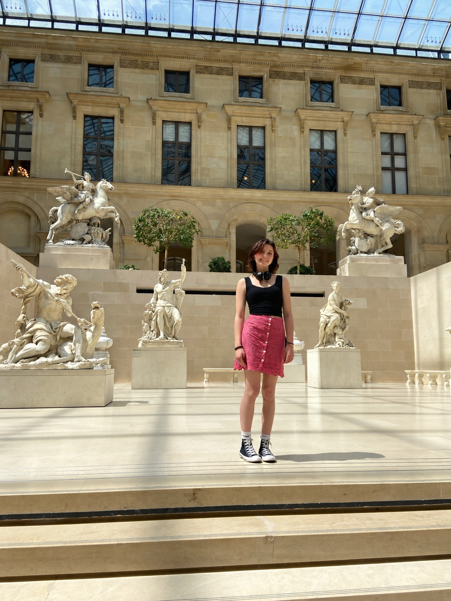

PRODUCT DESIGN / VISUAL CRAFT
Hi, I’m Heather.
I design digital experiences with clarity and care.
I’m a product designer with a background in graphic design, bringing research, visual systems, and prototyping to complex workflows.
Explore my work →
Selected product work


BEYOND THE SCREEN
Curiosity carries into everything I make.
Photography, travel, and editorial experiments are part of how I observe patterns, details, and the world around me.
A little more about me →